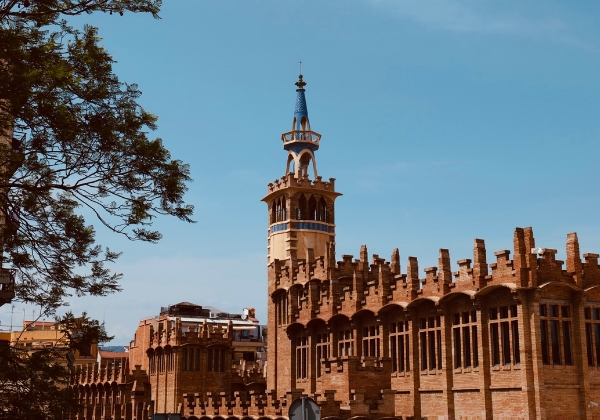

<!doctype html>
<html lang="zh" class="no-js" data-level="1">
	<!-- Generated by jAlbum app (https://jalbum.net) -->
	<head>
		<meta charset="UTF-8">
		<meta http-equiv="x-ua-compatible" content="ie=edge">
		<meta name="viewport" content="width=device-width, initial-scale=1.0">
		<link rel="preload" href="../res/icon/skinicon-thin.woff?v3.5.3" as="font" type="font/woff" crossorigin>
		<link rel="preload" href="../res/icon/skinicon-thin.ttf?v3.5.3" as="font" type="font/ttf" crossorigin>
		<link rel="prefetch" href="../res/icon/skinicon-thin.svg?v3.5.3" as="font">
		<title>2023.05 巴塞罗那</title>
		<meta name="description" content="2023.05 巴塞罗那">
		<meta name="generator" content="jAlbum 34.3.1 & Lucid 3.5.3 [Ice]">
		<meta property="og:image" content="shareimage.jpg">
		<meta property="og:image:width" content="600">
		<meta property="og:image:height" content="420">
		<link rel="image_src" href="shareimage.jpg">
		<meta name="twitter:image" content="shareimage.jpg">
		<meta property="og:title" content="2023.05 巴塞罗那">
		<meta property="og:description" content="">
		<meta property="og:type" content="website">
		<meta name="twitter:title" content="2023.05 巴塞罗那">
		<meta name="twitter:card" content="summary">
		<meta name="apple-mobile-web-app-status-bar-style" content="black-translucent">
		<meta name="apple-mobile-web-app-capable" content="yes">
		<meta name="format-detection" content="telephone=no">
		<link rel="apple-touch-icon" sizes="180x180" href="../res/apple-touch-icon.png">
		<link rel="icon" type="image/png" sizes="32x32" href="../res/favicon-32x32.png">
		<link rel="icon" type="image/png" sizes="16x16" href="../res/favicon-16x16.png">
		<link rel="manifest" href="../res/site.webmanifest" crossorigin="use-credentials">
		<link rel="mask-icon" href="../res/safari-pinned-tab.svg" color="#d9e3ee">
		<link rel="icon" href="../res/favicon.ico">
		<meta name="msapplication-TileColor" content="#d9e3ee">
		<meta name="msapplication-config" content="../res/browserconfig.xml">
		<meta name="theme-color" content="#d9e3ee">
		<link rel="stylesheet" href="../res/common.css?v=3.5.3">
	<link rel="alternate" href="album.rss" type="application/rss+xml">
</head>
	<body id="index" class="index light-mode sub-album has-lightbox has-title icon-thin">
		<div id="main" class="main paused windowed">
			<aside class="top-bar">
				<div id="controls" class="controls">
					<div class="title for-small btn" data-autoclose="3000" data-rel="folderinfo"><h1>2023.05 巴塞罗那</h1><span class="icon-caret-down"></span></div>
					<div class="group1"><a class="icon-one-level-up btn" href="../index.html"> <span>Back</span></a><a id="topnav-toggle" data-autoclose="3000"class="icon-menu btn" data-rel="topnav"><span class="icon-caret-down"></span></a><a class="icon-thumbnails btn" data-rel="thumbnails"><span>Thumbnails</span></a><div class="title for-medium btn" data-autoclose="3000" data-rel="folderinfo"><h1>2023.05 巴塞罗那</h1><span class="icon-caret-down"></span></div><a class="icon-connect btn" data-autoclose="3000" data-rel="social"><span>Share</span></a></div>
					<div class="group2"><div id="numbers" class="numbers"></div><a class="icon-arrow-left btn previous"><span>Previous</span></a><div class="playpause"><a class="icon-play btn play"><span>Start</span></a><a class="icon-pause btn pause"><div class="progress"></div></a></div><a class="icon-arrow-right btn next"><span>Next</span></a></div>
				</div>

				<section id="panels" class="panels">
					<div id="topnav" class="topnav-cont panel"><div class="topnav scrollable"><div class="home"><a href="../index.html">Life.DayDay.Plus</a></div><ul class="menu"><li><a href="../2026.04.20%20%E8%8B%8F%E9%BB%8E%E4%B8%96%E5%85%AD%E9%B8%A3%E8%8A%82/index.html">2026.04.20 苏黎世六鸣节</a></li><li><a href="../2026.04.06%20%E8%8B%8F%E9%BB%8E%E4%B8%96%20Forch-Pfannenstiel%E5%BE%92%E6%AD%A5/index.html">2026.04.06 苏黎世 Forch-Pfannenstie&hellip;</a></li><li><a href="../2025.12.31%20%E5%8D%A2%E5%8A%A0%E8%AF%BA%E3%80%81%E6%B4%9B%E8%BF%A6%E8%AF%BA%E3%80%81%E8%B4%9D%E6%9E%97%E4%BD%90%E7%BA%B3/index.html">2025.12.31 卢加诺、洛迦诺、贝林佐纳</a></li><li><a href="../2025.10.2-6%20%E6%96%B0%E7%96%86%E5%8D%97%E7%96%86%E4%B9%8B%E6%97%85/index.html">2025.10.2-6 新疆南疆之旅</a></li><li><a href="../2025.02.05%20%E8%A5%BF%E5%AE%89%E5%A4%A7%E5%85%B4%E5%96%84%E5%AF%BA/index.html">2025.02.05 西安大兴善寺</a></li><li><a href="../2025.02.04%20%E8%A5%BF%E5%AE%89%E6%98%86%E6%98%8E%E6%B1%A0/index.html">2025.02.04 西安昆明池</a></li><li><a href="../2025.01.31%20%E9%93%9C%E5%B7%9D/index.html">2025.01.31 铜川</a></li><li><a href="../2025.01.27%20%E9%A3%9E%E6%9C%BA%E4%B8%8A%E4%BF%AF%E7%9E%B0%E5%A4%A7%E5%9C%B0%E7%BA%B9%E7%90%86/index.html">2025.01.27 飞机上俯瞰大地纹理</a></li><li><a href="../2024.12.25-26%20%E5%8D%A1%E8%90%A8%E5%B8%83%E5%85%B0%E5%8D%A1/index.html">2024.12.25-26 卡萨布兰卡</a></li><li><a href="../2024.12.24%20%E9%87%8C%E6%96%AF%E6%9C%AC/index.html">2024.12.24 里斯本</a></li><li><a href="../2024.12.07-08%20%E4%BC%8A%E6%96%AF%E5%9D%A6%E5%B8%83%E5%B0%94/index.html">2024.12.07-08 伊斯坦布尔</a></li><li><a href="../2024.11.24%20%E6%B3%95%E5%9B%BD%E6%B3%A2%E5%B0%94%E5%A4%9A/index.html">2024.11.24 法国波尔多</a></li><li><a href="../2024.11.23%20%E6%B3%95%E5%9B%BD%E6%96%AF%E7%89%B9%E6%8B%89%E6%96%AF%E5%A0%A1/index.html">2024.11.23 法国斯特拉斯堡</a></li><li><a href="../2024.11.09-10%20%E6%9F%8F%E6%9E%97/index.html">2024.11.09-10 柏林</a></li><li><a href="../2024.08.24-25%20%E5%B8%83%E8%BE%BE%E4%BD%A9%E6%96%AF/index.html">2024.08.24-25 布达佩斯</a></li><li><a href="../2024.08.10%20%E5%B7%B4%E9%BB%8E/index.html">2024.08.10 巴黎</a></li><li><a href="../2024.07.06%20%E6%85%95%E5%B0%BC%E9%BB%91/index.html">2024.07.06 慕尼黑</a></li><li><a href="../2024.06.23-24%20%E5%8C%97%E4%BA%AC/index.html">2024.06.23-24 北京</a></li><li><a href="../2024.06.12-15%20%E4%B8%89%E4%BA%9A%E4%B9%8B%E6%97%85/index.html">2024.06.12-15 三亚之旅</a></li><li><a href="../2024.06.10%20%E7%A4%BC%E6%B3%89/index.html">2024.06.10 礼泉</a></li><li><a href="../2024.06.09%20%E8%A5%BF%E5%AE%89%E5%A4%A7%E5%94%90%E8%8A%99%E8%93%89%E5%9B%AD/index.html">2024.06.09 西安大唐芙蓉园</a></li><li><a href="../2024.04.27%20%E6%98%A5%E5%A4%A9Uetliberg%E5%BE%92%E6%AD%A5/index.html">2024.04.27 春天Uetliberg徒步</a></li><li><a href="../2024.04.20%20%E9%9B%A8%E5%90%8E%E8%8B%8F%E9%BB%8E%E4%B8%96/index.html">2024.04.20 雨后苏黎世</a></li><li><a href="../2023.12.19-22%20%E5%9C%A3%E8%AF%9E%E6%97%85%E8%A1%8CDAY5-8%20%E7%BD%97%E9%A9%AC%E6%AF%94%E8%90%A8/index.html">2023.12.19-22 圣诞旅行DAY5-8 罗马比萨</a></li><li><a href="../2023.12.18%20%E5%9C%A3%E8%AF%9E%E6%97%85%E8%A1%8CDAY4%20-%20%E9%9B%85%E5%85%B8%E5%9F%8E%E5%B8%82/index.html">2023.12.18 圣诞旅行DAY4 - 雅典城市</a></li><li><a href="../2023.12.17%20%E5%9C%A3%E8%AF%9E%E6%97%85%E8%A1%8CDAY3%20-%20%E9%9B%85%E5%85%B8Aegean%E5%B2%9B/index.html">2023.12.17 圣诞旅行DAY3 - 雅典Aegean岛</a></li><li><a href="../2023.12.16%20%E5%9C%A3%E8%AF%9E%E6%97%85%E8%A1%8CDAY2%20-%20FCO%E6%9C%BA%E5%9C%BA%EF%BC%8C%E9%9B%85%E5%85%B8/index.html">2023.12.16 圣诞旅行DAY2 - FCO机场，雅典</a></li><li><a href="../2023.12.15%20%E5%9C%A3%E8%AF%9E%E6%97%85%E8%A1%8CDAY1%20-%20%E5%B7%B4%E5%A1%9E%E5%B0%94%E6%9C%BA%E5%9C%BA/index.html">2023.12.15 圣诞旅行DAY1 - 巴塞尔机场</a></li><li><a href="../2023.12.09%20%E8%8B%8F%E9%BB%8E%E4%B8%96Irchel%E5%85%AC%E5%9B%AD/index.html">2023.12.09 苏黎世Irchel公园</a></li><li><a href="../2023.12.03%20%E5%86%AC%E5%A4%A9%E7%9A%84%E8%8B%8F%E9%BB%8E%E4%B8%96%E6%9C%BA%E5%9C%BA/index.html">2023.12.03 冬天的苏黎世机场</a></li><li><a href="../2023.09.09%20Kanstanz/index.html">2023.09.09 Kanstanz</a></li><li><a href="../2023.09.02%20%E8%8B%8F%E9%BB%8E%E4%B8%96%E8%80%81%E5%9F%8E/index.html">2023.09.02 苏黎世老城</a></li><li><a href="../2023.08.19%20%E8%8E%B1%E8%8C%B5%E7%80%91%E5%B8%83/index.html">2023.08.19 莱茵瀑布</a></li><li><a href="../2023.07.30%20%E8%8B%8F%E9%BB%8E%E4%B8%96%E6%97%A5%E5%B8%B8/index.html">2023.07.30 苏黎世日常</a></li><li><a href="../2023.07.22%20Pilatus%E5%B1%B1/index.html">2023.07.22 Pilatus山</a></li><li><a href="../2023.07.15%20%E8%8B%8F%E9%BB%8E%E4%B8%96%20Uetliberg/index.html">2023.07.15 苏黎世 Uetliberg</a></li><li><a href="../2023.07.14%20%E8%8B%8F%E9%BB%8E%E4%B8%96%E5%BB%B6%E6%97%B6%E6%91%84%E5%BD%B1/index.html">2023.07.14 苏黎世延时摄影</a></li><li><a href="../2023.07.08%20Zuri%20Fascht/index.html">2023.07.08 Zuri Fascht</a></li><li><a href="../2023.07.07%20%E8%8B%8F%E9%BB%8E%E4%B8%96%E6%8B%8D%E6%9C%BA/index.html">2023.07.07 苏黎世拍机</a></li><li><a href="../2023.07.02%20%E5%AE%B6%E6%97%81%E7%9A%84%E8%8A%B1/index.html">2023.07.02 家旁的花</a></li><li><a href="../2023.07.01%20%E8%8B%8F%E9%BB%8E%E4%B8%96%E6%9C%BA%E5%9C%BA/index.html">2023.07.01 苏黎世机场</a></li><li><a href="../2023.06.19%20%E8%A5%BF%E5%AE%89%E4%BA%A4%E5%A4%A7%E5%88%9B%E6%96%B0%E6%B8%AF/index.html">2023.06.19 西安交大创新港</a></li><li><a href="../2023.06%20%E8%A5%BF%E9%AA%86%E5%B3%AA%E6%B0%B4%E5%BA%93/index.html">2023.06 西骆峪水库</a></li><li><a href="../2023.06%20%E8%A5%BF%E5%AE%89%E5%85%B4%E5%BA%86%E5%AE%AB/index.html">2023.06 西安兴庆宫</a></li><li><a href="../2023.06%20%E8%8B%8F%E9%BB%8E%E4%B8%96%E6%89%AB%E8%A1%97/index.html">2023.06 苏黎世扫街</a></li><li><a href="../2023.06%20%E7%A4%BC%E6%B3%89%E8%A2%81%E5%AE%B6%E6%9D%91/index.html">2023.06 礼泉袁家村</a></li><li><a href="../2023.06%20%E5%92%B8%E9%98%B3/index.html">2023.06 咸阳</a></li><li><a href="../2023.05%20%E6%97%A5%E5%86%85%E7%93%A6%2C%20%E6%B4%9B%E6%A1%91/index.html">2023.05 日内瓦, 洛桑</a></li><li class="actual"><a href="../2023.05%20%E5%B7%B4%E5%A1%9E%E7%BD%97%E9%82%A3/index.html">2023.05 巴塞罗那</a></li><li><a href="../2023.04%20%E5%88%97%E6%94%AF%E6%95%A6%E5%A3%AB%E7%99%BB/index.html">2023.04 列支敦士登</a></li><li><a href="../2023.04%20Stoos%E5%B1%B1/index.html">2023.04 Stoos山</a></li><li><a href="../2022.11%20%E5%8D%A2%E5%A1%9E%E6%81%A9/index.html">2022.11 卢塞恩</a></li><li><a href="../2022.08%20%E8%8B%8F%E9%BB%8E%E4%B8%96/index.html">2022.08 苏黎世</a></li><li><a href="../2020.07.05%20%E7%91%9E%E5%A3%AB%E9%BE%99%E7%96%86Lungern/index.html">2020.07.05 瑞士龙疆Lungern</a></li><li><a href="../2020.02.12-13%20%E7%91%9E%E5%A3%ABBrigels/index.html">2020.02.12-13 瑞士Brigels</a></li><li><a href="../2019.12.28%20%E7%91%9E%E5%A3%AB%E5%B0%91%E5%A5%B3%E5%B3%B0/index.html">2019.12.28 瑞士少女峰</a></li><li><a href="../2019.12.19%20%E7%91%9E%E5%A3%ABRigi%E5%B1%B1/index.html">2019.12.19 瑞士Rigi山</a></li><li><a href="../2019.11.02%20%E6%84%8F%E5%A4%A7%E5%88%A9%E7%B1%B3%E5%85%B0/index.html">2019.11.02 意大利米兰</a></li><li class="has-submenu"><a href="../999%E5%9B%BE%E5%BA%8A/index.html">999图床</a><ul class="menu"><li><a href="../999%E5%9B%BE%E5%BA%8A/20240604/index.html">20240604</a></li></ul></li></ul></div></div>
					<div id="thumbnails" class="thumbnails masonry off"><div class="thumb-cont scrollable"><a class="thumb preload active landscape" href="slides/DCCE8424-0D81-47A3-A770-332589C4F811_1_105_c.jpeg" data-vars='{"thumb":"DCCE8424-0D81-47A3-A770-332589C4F811_1_105_c.jpeg","title":"储蓄基金会博物馆","type":"image","width":1086,"height":724,"thumbWidth":180,"thumbHeight":120,"caption":"<div class=_#34_title_#34_>储蓄基金会博物馆</div>"}' title="<div class=&#34;title&#34;>储蓄基金会博物馆</div>"></a><a class="thumb preload landscape" href="slides/49392B9D-5A1F-44F2-B976-CD80EA362DA4_1_105_c.jpeg" data-vars='{"thumb":"49392B9D-5A1F-44F2-B976-CD80EA362DA4_1_105_c.jpeg","title":"巴塞罗那大学","type":"image","width":1086,"height":724,"thumbWidth":180,"thumbHeight":120,"caption":"<div class=_#34_title_#34_>巴塞罗那大学</div>"}' title="<div class=&#34;title&#34;>巴塞罗那大学</div>"></a><a class="thumb preload landscape" href="slides/39DBDA56-7BB9-4FDD-AE86-23531D34689E_1_105_c.jpeg" data-vars='{"thumb":"39DBDA56-7BB9-4FDD-AE86-23531D34689E_1_105_c.jpeg","title":"依然在修建中的圣家堂","type":"image","width":1086,"height":724,"thumbWidth":180,"thumbHeight":120,"caption":"<div class=_#34_title_#34_>依然在修建中的圣家堂</div>"}' title="<div class=&#34;title&#34;>依然在修建中的圣家堂</div>"></a><a class="thumb preload landscape" href="slides/89156A34-88E3-4FF7-BF60-7AAF9A61FC48_1_105_c.jpeg" data-vars='{"thumb":"89156A34-88E3-4FF7-BF60-7AAF9A61FC48_1_105_c.jpeg","title":"米拉之家仰视","type":"image","width":1086,"height":724,"thumbWidth":180,"thumbHeight":120,"caption":"<div class=_#34_title_#34_>米拉之家仰视</div>"}' title="<div class=&#34;title&#34;>米拉之家仰视</div>"></a><a class="thumb preload landscape" href="slides/34B02C26-1CB8-4AD2-9192-DDEDD9800370_1_105_c.jpeg" data-vars='{"thumb":"34B02C26-1CB8-4AD2-9192-DDEDD9800370_1_105_c.jpeg","title":"米拉之家透明门","type":"image","width":1086,"height":724,"thumbWidth":180,"thumbHeight":120,"caption":"<div class=_#34_title_#34_>米拉之家透明门</div>"}' title="<div class=&#34;title&#34;>米拉之家透明门</div>"></a><a class="thumb preload landscape" href="slides/128DA926-021E-4AC4-8994-29F959B00264_1_105_c.jpeg" data-vars='{"thumb":"128DA926-021E-4AC4-8994-29F959B00264_1_105_c.jpeg","title":"米拉之家庭院","type":"image","width":1086,"height":724,"thumbWidth":180,"thumbHeight":120,"caption":"<div class=_#34_title_#34_>米拉之家庭院</div>"}' title="<div class=&#34;title&#34;>米拉之家庭院</div>"></a><a class="thumb preload landscape" href="slides/3A1DA863-3474-46B7-BA99-6960FB942395_1_105_c.jpeg" data-vars='{"thumb":"3A1DA863-3474-46B7-BA99-6960FB942395_1_105_c.jpeg","title":"米拉之家屋顶","type":"image","width":998,"height":787,"thumbWidth":152,"thumbHeight":120,"caption":"<div class=_#34_title_#34_>米拉之家屋顶</div>"}' title="<div class=&#34;title&#34;>米拉之家屋顶</div>"></a><a class="thumb preload landscape" href="slides/C4D7A335-CB68-432A-ACFF-F1A8B7DE8C4D_1_105_c.jpeg" data-vars='{"thumb":"C4D7A335-CB68-432A-ACFF-F1A8B7DE8C4D_1_105_c.jpeg","title":"镜子中的屋顶垂饰","type":"image","width":1086,"height":724,"thumbWidth":180,"thumbHeight":120,"caption":"<div class=_#34_title_#34_>镜子中的屋顶垂饰</div>"}' title="<div class=&#34;title&#34;>镜子中的屋顶垂饰</div>"></a><a class="thumb preload landscape" href="slides/37B4E1AB-D7CA-4505-A65D-C8E966516C4D_1_105_c.jpeg" data-vars='{"thumb":"37B4E1AB-D7CA-4505-A65D-C8E966516C4D_1_105_c.jpeg","title":"米拉之家里的窗户","type":"image","width":1086,"height":724,"thumbWidth":180,"thumbHeight":120,"caption":"<div class=_#34_title_#34_>米拉之家里的窗户</div>"}' title="<div class=&#34;title&#34;>米拉之家里的窗户</div>"></a><a class="thumb preload landscape" href="slides/FC4B5593-96E6-492E-B2E3-61A58A766F92_1_105_c.jpeg" data-vars='{"thumb":"FC4B5593-96E6-492E-B2E3-61A58A766F92_1_105_c.jpeg","title":"米拉之家的波浪外墙","type":"image","width":1086,"height":724,"thumbWidth":180,"thumbHeight":120,"caption":"<div class=_#34_title_#34_>米拉之家的波浪外墙</div>"}' title="<div class=&#34;title&#34;>米拉之家的波浪外墙</div>"></a><a class="thumb preload landscape" href="slides/93AE0E0D-CAAD-4CBA-8416-CE914842691D_1_105_c.jpeg" data-vars='{"thumb":"93AE0E0D-CAAD-4CBA-8416-CE914842691D_1_105_c.jpeg","title":"奎尔宫里的石柱","type":"image","width":1029,"height":763,"thumbWidth":162,"thumbHeight":120,"caption":"<div class=_#34_title_#34_>奎尔宫里的石柱</div>"}' title="<div class=&#34;title&#34;>奎尔宫里的石柱</div>"></a><a class="thumb preload landscape" href="slides/81E65699-E6A3-461B-AD13-066856FB8192_1_105_c.jpeg" data-vars='{"thumb":"81E65699-E6A3-461B-AD13-066856FB8192_1_105_c.jpeg","title":"颇具热带气息的奎尔宫平台","type":"image","width":1086,"height":724,"thumbWidth":180,"thumbHeight":120,"caption":"<div class=_#34_title_#34_>颇具热带气息的奎尔宫平台</div>"}' title="<div class=&#34;title&#34;>颇具热带气息的奎尔宫平台</div>"></a><a class="thumb preload landscape" href="slides/D5621143-3CBF-4699-BF34-803A568FE928_1_105_c.jpeg" data-vars='{"thumb":"D5621143-3CBF-4699-BF34-803A568FE928_1_105_c.jpeg","title":"追气泡的小孩","type":"image","width":1067,"height":736,"thumbWidth":174,"thumbHeight":120,"caption":"<div class=_#34_title_#34_>追气泡的小孩</div>"}' title="<div class=&#34;title&#34;>追气泡的小孩</div>"></a><a class="thumb preload landscape" href="slides/8E439C90-C3CD-4759-B93F-F743FD76A5AB_1_105_c.jpeg" data-vars='{"thumb":"8E439C90-C3CD-4759-B93F-F743FD76A5AB_1_105_c.jpeg","title":"FAR Barcelona","type":"image","width":1086,"height":724,"thumbWidth":180,"thumbHeight":120,"caption":"<div class=_#34_title_#34_>FAR Barcelona</div>"}' title="<div class=&#34;title&#34;>FAR Barcelona</div>"></a><a class="thumb preload landscape" href="slides/4A9CF63E-7594-4114-AC7B-183FB9FBCB8E_1_105_c.jpeg" data-vars='{"thumb":"4A9CF63E-7594-4114-AC7B-183FB9FBCB8E_1_105_c.jpeg","title":"码头上的海鸥","type":"image","width":1068,"height":735,"thumbWidth":174,"thumbHeight":120,"caption":"<div class=_#34_title_#34_>码头上的海鸥</div>"}' title="<div class=&#34;title&#34;>码头上的海鸥</div>"></a><a class="thumb preload landscape" href="slides/56E3A5C0-7674-4075-A2CB-11FFE2E8DEEE_1_105_c.jpeg" data-vars='{"thumb":"56E3A5C0-7674-4075-A2CB-11FFE2E8DEEE_1_105_c.jpeg","title":"码头帆船","type":"image","width":1086,"height":724,"thumbWidth":180,"thumbHeight":120,"caption":"<div class=_#34_title_#34_>码头帆船</div>"}' title="<div class=&#34;title&#34;>码头帆船</div>"></a><a class="thumb preload landscape" href="slides/95B01DFF-A781-4430-A41E-CD1C79D7400D_1_105_c.jpeg" data-vars='{"thumb":"95B01DFF-A781-4430-A41E-CD1C79D7400D_1_105_c.jpeg","title":"波盖利亚市场大门","type":"image","width":1154,"height":680,"thumbWidth":200,"thumbHeight":118,"caption":"<div class=_#34_title_#34_>波盖利亚市场大门</div>"}' title="<div class=&#34;title&#34;>波盖利亚市场大门</div>"></a><a class="thumb preload landscape" href="slides/33EE9491-FA3A-44FD-8A39-04F3F8BFCE17_1_105_c.jpeg" data-vars='{"thumb":"33EE9491-FA3A-44FD-8A39-04F3F8BFCE17_1_105_c.jpeg","title":"鲜花","type":"image","width":1224,"height":642,"thumbWidth":200,"thumbHeight":105,"caption":"<div class=_#34_title_#34_>鲜花</div>"}' title="<div class=&#34;title&#34;>鲜花</div>"></a><a class="thumb preload landscape" href="slides/5AA40F1A-8B3D-439A-A103-AAF8A56E9F1B_1_105_c.jpeg" data-vars='{"thumb":"5AA40F1A-8B3D-439A-A103-AAF8A56E9F1B_1_105_c.jpeg","title":"街头艺人","type":"image","width":1086,"height":724,"thumbWidth":180,"thumbHeight":120,"caption":"<div class=_#34_title_#34_>街头艺人</div>"}' title="<div class=&#34;title&#34;>街头艺人</div>"></a><a class="thumb preload landscape" href="slides/61BD09BD-9963-49B2-94AF-D84F1F8221EA_1_105_c.jpeg" data-vars='{"thumb":"61BD09BD-9963-49B2-94AF-D84F1F8221EA_1_105_c.jpeg","title":"西班牙火腿","type":"image","width":1128,"height":696,"thumbWidth":194,"thumbHeight":120,"caption":"<div class=_#34_title_#34_>西班牙火腿</div>"}' title="<div class=&#34;title&#34;>西班牙火腿</div>"></a><a class="thumb lazyload landscape" href="slides/DC74B3DD-2121-4072-B16E-E56C98BA824C_1_105_c.jpeg" data-vars='{"thumb":"DC74B3DD-2121-4072-B16E-E56C98BA824C_1_105_c.jpeg","title":"巴塞罗那海岸沙滩","type":"image","width":1086,"height":724,"thumbWidth":180,"thumbHeight":120,"caption":"<div class=_#34_title_#34_>巴塞罗那海岸沙滩</div>"}' title="<div class=&#34;title&#34;>巴塞罗那海岸沙滩</div>"></a><a class="thumb lazyload landscape" href="slides/9BAD5CBA-BA17-405E-ABDB-282C511E3A98_1_105_c.jpeg" data-vars='{"thumb":"9BAD5CBA-BA17-405E-ABDB-282C511E3A98_1_105_c.jpeg","title":"从奎尔宫俯瞰巴塞罗那","type":"image","width":1086,"height":724,"thumbWidth":180,"thumbHeight":120,"caption":"<div class=_#34_title_#34_>从奎尔宫俯瞰巴塞罗那</div>"}' title="<div class=&#34;title&#34;>从奎尔宫俯瞰巴塞罗那</div>"></a><a class="thumb lazyload landscape" href="slides/FB20DCC9-1F43-4A98-93DC-6215F33BCD96_1_105_c.jpeg" data-vars='{"thumb":"FB20DCC9-1F43-4A98-93DC-6215F33BCD96_1_105_c.jpeg","title":"诺坎普球场的雕像","type":"image","width":1086,"height":724,"thumbWidth":180,"thumbHeight":120,"caption":"<div class=_#34_title_#34_>诺坎普球场的雕像</div>"}' title="<div class=&#34;title&#34;>诺坎普球场的雕像</div>"></a><a class="thumb lazyload landscape" href="slides/1894679F-8EB5-4E1B-8635-FE6376E10B64_1_105_c.jpeg" data-vars='{"thumb":"1894679F-8EB5-4E1B-8635-FE6376E10B64_1_105_c.jpeg","title":"巴塞罗那俱乐部外的摊贩","type":"image","width":1004,"height":782,"thumbWidth":154,"thumbHeight":120,"caption":"<div class=_#34_title_#34_>巴塞罗那俱乐部外的摊贩</div>"}' title="<div class=&#34;title&#34;>巴塞罗那俱乐部外的摊贩</div>"></a><a class="thumb lazyload landscape" href="slides/0B5799B7-F8CB-4671-AC82-7ACF2F6ECBE8_1_105_c.jpeg" data-vars='{"thumb":"0B5799B7-F8CB-4671-AC82-7ACF2F6ECBE8_1_105_c.jpeg","title":"奎尔宫的美丽外墙","type":"image","width":1080,"height":727,"thumbWidth":178,"thumbHeight":120,"caption":"<div class=_#34_title_#34_>奎尔宫的美丽外墙</div>"}' title="<div class=&#34;title&#34;>奎尔宫的美丽外墙</div>"></a><a class="thumb lazyload landscape" href="slides/9FDDEAA2-889D-448D-B608-0DD9AA538890_1_105_c.jpeg" data-vars='{"thumb":"9FDDEAA2-889D-448D-B608-0DD9AA538890_1_105_c.jpeg","title":"巴塞罗那小巷","type":"image","width":1086,"height":724,"thumbWidth":180,"thumbHeight":120,"caption":"<div class=_#34_title_#34_>巴塞罗那小巷</div>"}' title="<div class=&#34;title&#34;>巴塞罗那小巷</div>"></a><a class="thumb lazyload landscape" href="slides/525E1B6D-F861-466E-A00B-6D4548A7F1B1_1_105_c.jpeg" data-vars='{"thumb":"525E1B6D-F861-466E-A00B-6D4548A7F1B1_1_105_c.jpeg","title":"加泰罗尼亚广场的鸽子","type":"image","width":1131,"height":695,"thumbWidth":195,"thumbHeight":120,"caption":"<div class=_#34_title_#34_>加泰罗尼亚广场的鸽子</div>"}' title="<div class=&#34;title&#34;>加泰罗尼亚广场的鸽子</div>"></a><a class="thumb lazyload landscape" href="slides/9A43EB62-9FB0-4614-BD16-AC78934AF105_1_105_c.jpeg" data-vars='{"thumb":"9A43EB62-9FB0-4614-BD16-AC78934AF105_1_105_c.jpeg","title":"巴塞罗那地铁","type":"image","width":1200,"height":654,"thumbWidth":200,"thumbHeight":109,"caption":"<div class=_#34_title_#34_>巴塞罗那地铁</div>"}' title="<div class=&#34;title&#34;>巴塞罗那地铁</div>"></a><a class="thumb lazyload landscape" href="slides/45C58A90-7F4A-4EE6-BAE4-C0FD7BD85B43_1_105_c.jpeg" data-vars='{"thumb":"45C58A90-7F4A-4EE6-BAE4-C0FD7BD85B43_1_105_c.jpeg","title":"蒙特惠奇魔幻山","type":"image","width":1104,"height":711,"thumbWidth":186,"thumbHeight":120,"caption":"<div class=_#34_title_#34_>蒙特惠奇魔幻山</div>"}' title="<div class=&#34;title&#34;>蒙特惠奇魔幻山</div>"></a><a class="thumb lazyload landscape" href="slides/8A5B55D9-C5A9-41F8-830D-87588E510D9D_1_105_c.jpeg" data-vars='{"thumb":"8A5B55D9-C5A9-41F8-830D-87588E510D9D_1_105_c.jpeg","title":"巴塞罗那竞技场","type":"image","width":1081,"height":727,"thumbWidth":178,"thumbHeight":120,"caption":"<div class=_#34_title_#34_>巴塞罗那竞技场</div>"}' title="<div class=&#34;title&#34;>巴塞罗那竞技场</div>"></a><a class="thumb lazyload landscape" href="slides/F8780612-17FE-42D4-B0CC-757002DD6E3E_1_105_c.jpeg" data-vars='{"thumb":"F8780612-17FE-42D4-B0CC-757002DD6E3E_1_105_c.jpeg","title":"威尼斯双塔和巴塞罗那观光车","type":"image","width":1143,"height":688,"thumbWidth":199,"thumbHeight":120,"caption":"<div class=_#34_title_#34_>威尼斯双塔和巴塞罗那观光车</div>"}' title="<div class=&#34;title&#34;>威尼斯双塔和巴塞罗那观光车</div>"></a></div></div>
					<div id="folderinfo" class="panel"><div class="folderinfo"><div class="counts"><span class="images">31&nbsp;images</span></div></div></div>
					<div id="social" class="social panel"><div class="preview"><div class="thumb"><div class="caption"><h3>2023.05 巴塞罗那</h3></div><div class="social-links"></div></div></div></div>
				</section>
			</aside>

			<section id="lightbox" class="lightbox conveyor">
				<div id="cards" class="cards center bottom"></div>
			</section>
		</div>
		<script src="../res/jquery.min.js"></script>
		<script src="../res/all.min.js?v=3.5.3"></script>
		<script>
			_jaWidgetBarColor = 'white';
			$(document).ready(function(){
				REL_PATH='2023.05 巴塞罗那/';
				$('#main').skin({"albumName":"Life.DayDay.Plus","makeDate":1777419107,"licensee":"d92611c760289ba885788c5a5b0f349e","thumbDims":"200x120","hideControls":3,"share":{"sites":"link","hook":".social .preview"},"pageType":"index","rootPath":"..","resPath":"../res","relPath":"2023.05%20%E5%B7%B4%E5%A1%9E%E7%BD%97%E9%82%A3","level":1,"previousFoldersLast":"../2023.05%20%E6%97%A5%E5%86%85%E7%93%A6%2C%20%E6%B4%9B%E6%A1%91/index.html#img=F16CEC23-EFE2-49D7-8EAB-3C8981EEE7D1.jpeg","nextFoldersFirst":"../2023.04%20%E5%88%97%E6%94%AF%E6%95%A6%E5%A3%AB%E7%99%BB/index.html#img=443494EB-671A-4FB2-8397-DD1DDE3C1297.jpeg","afterLast":"ask","transitionType":"conveyor","slideshowDelay":3000,"transitionSpeed":1000,"captionStyle":"light","backgroundAudioSlideshowControl":!0,"showFullscreen":!1});
				$('.main-cont [data-tooltip]').addTooltip();
			});

		</script>

		<div id="jalbumwidgetcontainer"></div>
		<script>
		_jaSkin = "Lucid";
		_jaStyle = "Ice.css";
		_jaVersion = "34.3.1";
		_jaGeneratorType = "desktop";
		_jaLanguage = "zh";
		_jaPageType = "index";
		_jaRootPath = "..";
		_jaUserId = "1272258";
		var script = document.createElement("script");
		script.type = "text/javascript";
		script.async = true;
		script.src = "http"+("https:"==document.location.protocol?"s":"")+"://jalbum.net/widgetapi/load.js";
		document.getElementById("jalbumwidgetcontainer").appendChild(script);
		</script>
	</body>
</html>
